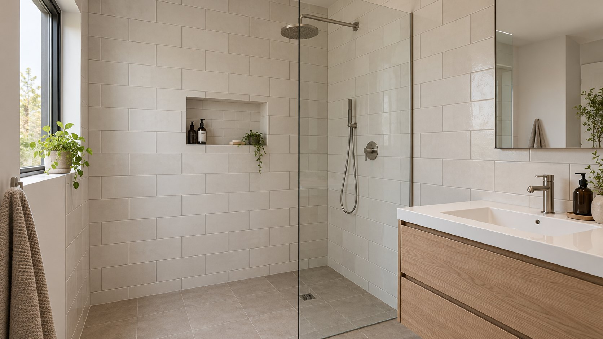

Faïence et douche
à l’italienne
Pose de carrelage mural pour la salle de bain et la cuisine : faïence, douche à l’italienne, crédence et mosaïque.
Pascal Quéro · Châtelaudren-Plouagat
Demander un devis
Faïence murale
Murs de salle de bain ou crédence de cuisine : indiquez les surfaces à habiller, les dimensions et le format de carreaux prévu.
Douche à l’italienne
Décrivez la douche existante ou le projet de création. Précisez les dimensions, l’emplacement de l’évacuation et les travaux déjà prévus par les autres intervenants.
Mosaïque
Une mosaïque peut concerner une paroi de douche, une crédence ou une petite surface. Précisez la zone, les dimensions et le modèle envisagé.
Avant de me contacter
La page concerne-t-elle une rénovation complète de salle de bain ?
Elle présente les travaux de carrelage, de faïence et de douche. Décrivez séparément vos besoins en plomberie, électricité ou mobilier ; le périmètre du devis sera à préciser avec Pascal.
Que préparer avant de prendre contact ?
Des photos, les dimensions des murs ou de la douche, la commune du chantier et vos contraintes de calendrier. Un croquis ou un plan aide à expliquer le projet.
Votre chantier
Indiquez la commune, la surface et les travaux prévus. Vous pouvez aussi utiliser les liens de contact pour discuter directement du projet avec Pascal.